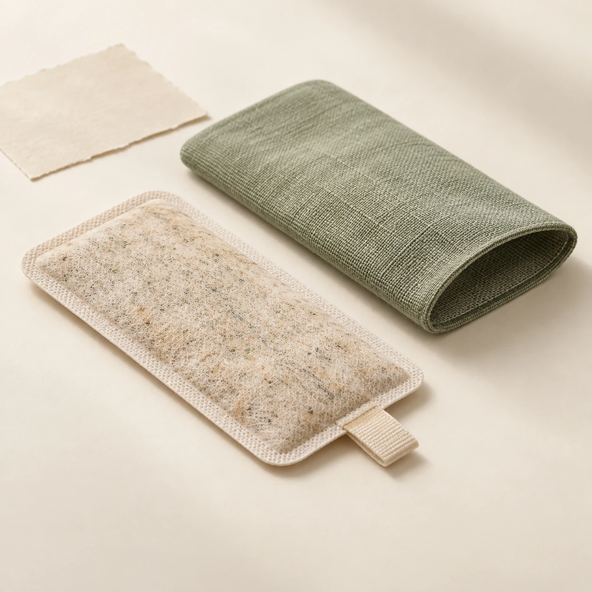

智能鞋垫
以鞋垫与可拆电子舱为基础，探索硬件销售及维护服务，优先验证稳定采集与舒适佩戴。
待验证：可靠性、舒适度与制造成本PRODUCT & EVERYDAY CARE
每脚8点FSR＋IMU，三层软结构与可拆电子舱。先验证可靠采集与舒适佩戴，再逐步研究长期记录和温和养护。

可更换草本药芯让日常穿着多一份熟悉的感受。平台关注的是佩戴、清洁与更换提醒；药芯的调理效果仍需独立研究和验证。
以下是 V1 计划验证的使用流程。现在无需设备，打开真实数据工作台，就能体验公开记录回放、片段分析与报告。
选择合适鞋码，确认鞋垫平整、柔性连接片固定、外置电子舱牢靠，再按打样后的操作说明使用。
原型阶段重点验证佩戴与固定计划通过 BLE 将左右脚信号传到手机，查看记录时间和连接状态，再观察受力分布与行走趋势。
当前可回放真实公开记录结合实际活动、鞋袜舒适度与个人感受理解变化。后续拟加入观察记录和本人授权的家庭共享。
长期记录与共享属于后续规划进入数据工作台，选择公开记录并播放；拖动时间轴或选择片段，查看同步受力图、曲线和规则统计，再生成报告。原始数据来自PhysioNet，未连接我们的自制鞋垫，也未运行真实AI模型。
V1 计划由每脚 8 点 FSR 与 IMU 采集信号，经 ESP32 和 BLE 传到手机，再供网页展示。实测接入尚未实现；浏览器直接连接的兼容性也需要验证。
当前页面仅支持公开记录回放与浏览器内文件分析，尚未提供账号或家属共享。后续拟由本人选择分享对象与记录范围，并提供撤回授权的入口，让关怀建立在明确同意之上。
V1 计划采用可拆表层与外置电子舱，具体方法需随实物打样验证。电子模块应避免浸水；充电时关机、取下模块并停止穿戴，依最终操作说明使用。
药芯目前是可替换材料概念，形状、安装方式、更换周期与皮肤耐受尚待验证。平台拟提供佩戴和更换提醒；调理效果需独立研究，不能作为治疗依据。
先验证信号能否稳定记录，再研究舒适佩戴、趋势分析与长期服务。每一步升级，都需要实际数据来回答。
V1 硬件已形成设计方案，制作、采集性能与真实行走测试尚待完成。
双脚各 8 点 FSR＋IMU，验证采样、BLE 通信与左右脚展示；以实物测试记录稳定性和佩戴感受。
探索 16／32 点阵列与薄型结构，逐项验证校准、耐弯折和不同鞋型下的读数一致性。
在取得授权、积累可靠样本与标注后，研究可解释的趋势提示，评估模型的泛化能力与误报。
围绕长期记录、养护提醒与授权共享完善平台；温湿度等扩展信号需补齐硬件并验证后接入。
产品化方向仍在探索：先验证可用性与需求，再确定服务内容、定价和更换周期。
以鞋垫与可拆电子舱为基础，探索硬件销售及维护服务，优先验证稳定采集与舒适佩戴。
待验证：可靠性、舒适度与制造成本探索薄型草本材料与织物套的配套服务，通过打样研究结构、耐受与更换需求。
待验证：材料、安装与效果边界探索个人趋势、养护提醒与授权共享服务，完成实测接入后，再逐步研究 AI 解读。
待验证：数据接入、权限与使用价值